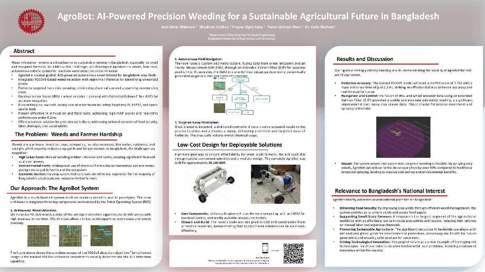

I am a first-year Ph.D. student at the Illinois Institute of Technology, advised by Prof. Binghui Wang. My research focuses on trustworthy machine learning, with an emphasis on privacy and security in large language models.
Previously, I completed my B.Sc. in Electrical & Electronic Engineering at Bangladesh University of Engineering and Technology (BUET), where I worked on medical AI, model compression, and multimodal learning.
Office: Room 019A Stuart Building, 10 W 31st St, Chicago, IL 60616, US
|
Investigating privacy vulnerabilities and security threats in large language models, including membership inference, data extraction, and adversarial attacks.
Developing systems that enable secure and privacy-aware collaboration across institutions. Contributing to PDASP-T, a holistic privacy-preserving collaborative data sharing system for intelligent transportation.
Building and compressing vision-language models for medical applications, including dermatological diagnosis and tuberculosis detection, with a focus on efficiency and interpretability.

Introduces gradient extrapolation techniques for improved policy optimization in reinforcement learning.

Evaluates structural pruning and activation-aware quantization for compressing medical multimodal LLMs, achieving 70% memory reduction with improved accuracy.
A specialist-generalist framework for dermatological VQA that balances accuracy with lightweight deployment.

Enhances dermatological reasoning capabilities under low-resource constraints through improved training strategies.

A transfer learning approach using pre-trained CNNs for skin cancer classification, addressing imbalanced dataset challenges.

A multi-stage deep learning pipeline for tuberculosis detection with explainable AI insights for clinical interpretability.

A low-cost autonomous precision weeding robot for small and marginal farmers. Vision-guided weeding with YOLOv5, automated navigation via wheel encoder + IMU with Extended Kalman Filter, and targeted herbicide spraying.

A multimodal framework combining image-based diagnosis with visual question answering, powered by DINOv2 and a compressed LLaVA model. Trained via four stages: auxiliary classification, medical reasoning, interaction optimization, and resource-efficient deployment.
|
|
|
Template adapted from Jon Barron |